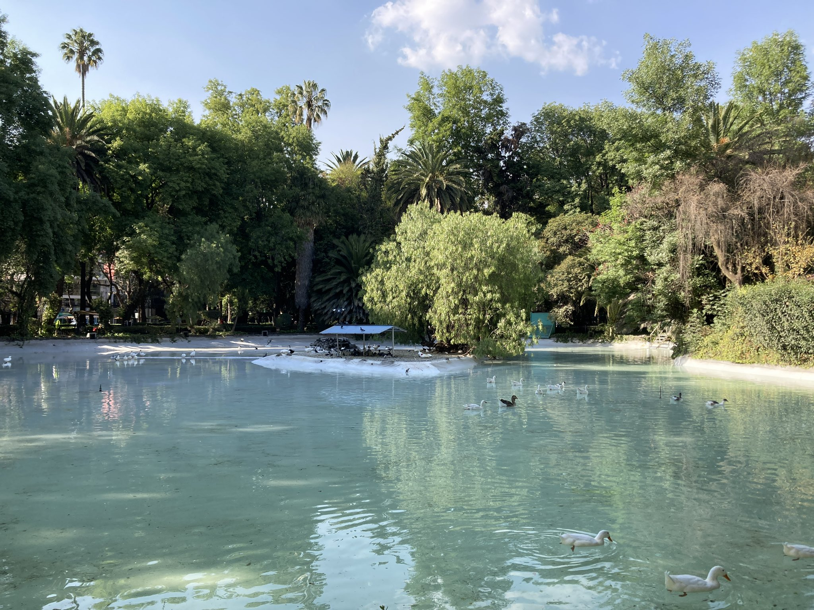
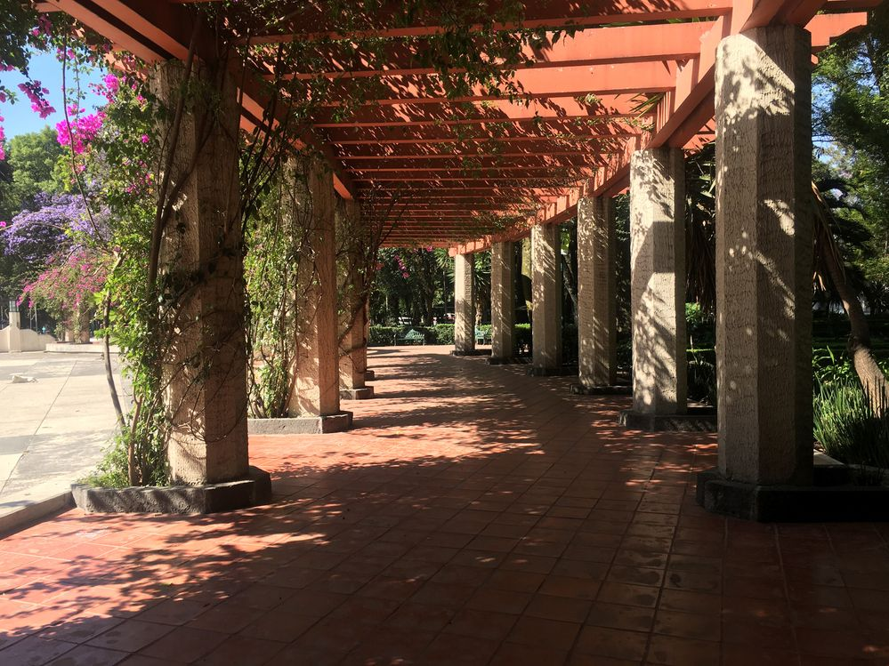
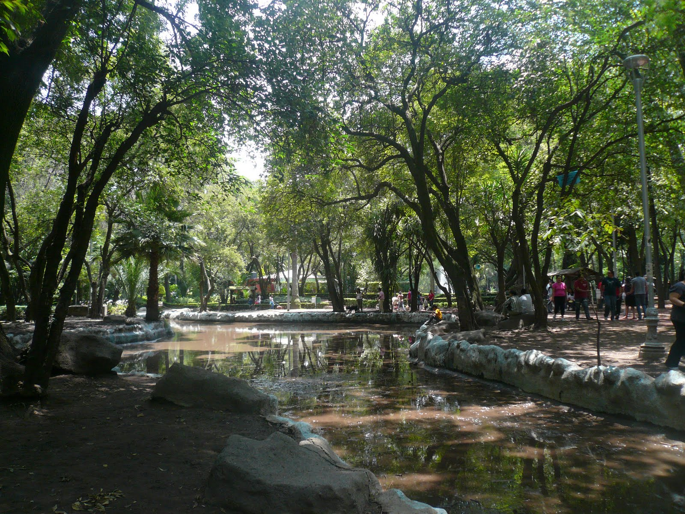
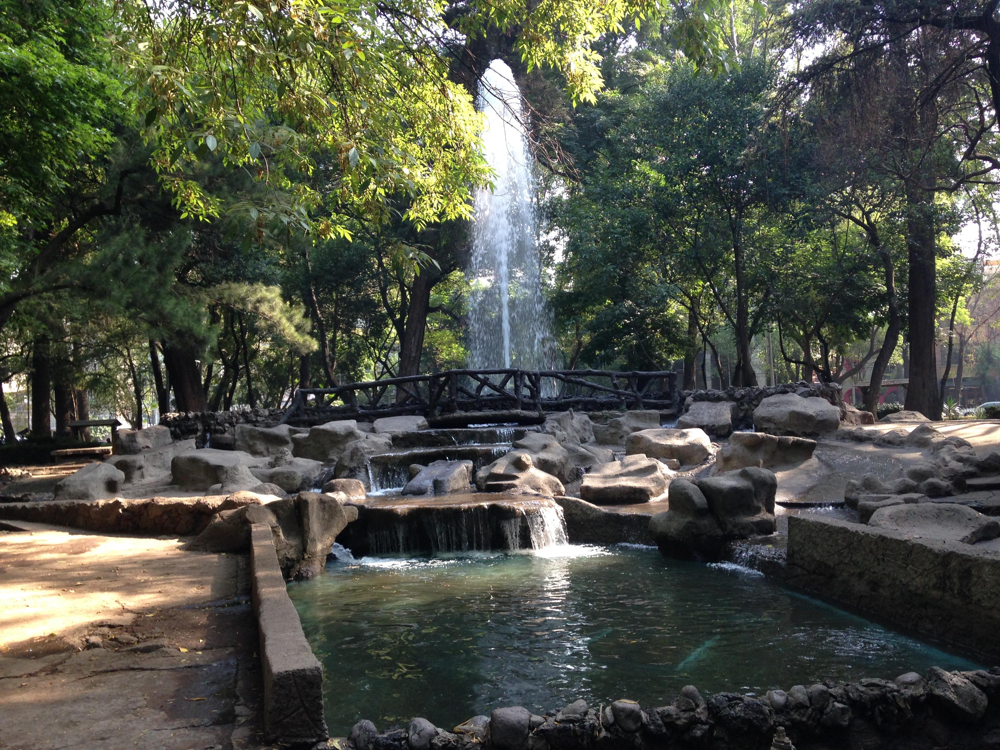

Naturaleza en el Corazón de la Ciudad

Relajación y Recreación

Actividades al Aire Libre

Paseos Tranquilos
Descubre la Tranquilidad en el Parque México
Sumérgete en un oasis de serenidad en el corazón de la ciudad en el Parque México. Este encantador parque ofrece un escape natural donde puedes disfrutar de la belleza del entorno, realizar actividades al aire libre y encontrar momentos de paz.
Pasea por sus senderos arbolados, relájate en áreas verdes o participa en actividades recreativas. El Parque México es el lugar perfecto para disfrutar de la naturaleza y desconectarte del ajetreo urbano.
¿Qué puedes hacer?
El Parque México ofrece una variedad de actividades para que disfrutes de su belleza natural. Aquí algunas sugerencias:
- Pasear por los senderos y disfrutar de la flora y fauna del parque.
- Practicar yoga o ejercicios al aire libre en áreas designadas.
- Organizar un picnic y relajarte bajo la sombra de los árboles.
actividades al aire libre